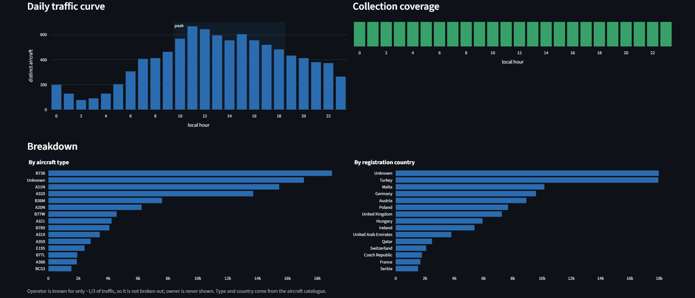

The sky over Central Europe, on the record.
A live map of the planes over Central Europe, backed by a data warehouse that has been quietly recording the sky every two minutes since September 2026.
Live now · no login
What you see
Pick any day and explore the sky over Central Europe.

-
A hexagon density map
Where the traffic was, in 3D, for the day you pick.
-
A daily curve
How many aircraft were up, hour by hour.
-
Types and countries
Which aircraft, from where, were overhead.
-
Collection gaps
The honest bit: where the recording missed an hour.
No login, runs in your browser.
Under the hood
The map is the easy part. Behind it is a small data-engineering pipeline.
Continuous collection
Polls the live OpenSky feed every 2 minutes over a fixed Central European box, landing every snapshot. A day not collected is lost for good.
Cleaned and organized
Raw snapshots are validated into a staging layer, then stitched into flights.
Star-schema warehouse
A Kimball dimensional model in PostgreSQL (facts + dimensions), 7.7M+ position rows, rebuilt hourly.
Stack
Python, PostgreSQL, Docker; served by FastAPI + Streamlit behind Caddy / HTTPS on a small VPS.
Want the details? The full project, design docs and SQL are on GitHub.